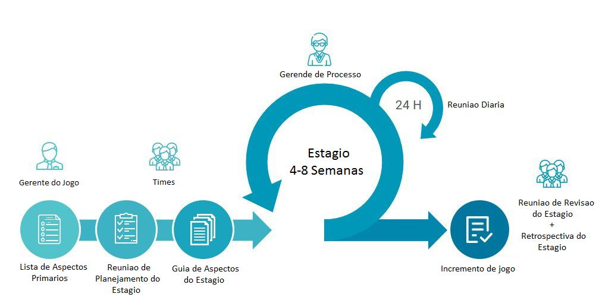

| Report: Visão Geral do SBGPP |
 |
|
No SBGPP, os projetos acontecem em uma série de iterações, com até dois meses de duração, chamadas Estágios. SBGPP é um processo de software para o desenvolvimento de jogos cujo os requisitos não estão plenamente definidos e a criatividade é um elemento essencial. O jogo a ser feito utilizando o SBGPP tem seus aspectos definido na Pendências da Lista de Aspectos Primários, que é uma lista de todos os aspectos desejos no jogo. No inicio de cada incremento é feita uma Reunião de Planejamento do Estágio na qual o Gerente do Jogo prioriza as Lista de Aspectos Primários, e os times Audiovisual e de Mecânicas e Jogabilidade selecionam os aspectos que eles podem desenvolver durante o próximo Estágio. Esses aspectos são então copiados da Lista de Aspectos Primários para o Guia de Aspectos do Estágio. Durante um incremento, são conduzidas curtas Reuniões Diárias, que ajudam a equipe a manter-se no rumo. Ao final de cada incremento a equipe demonstra o incremento de jogo concluído, na Reunião de Revisão do Estágio.  |